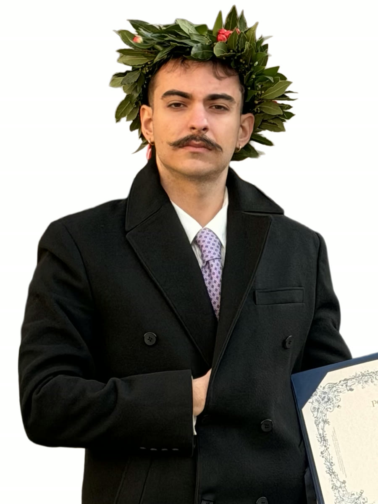

I see architecture as a way to navigate life. New challenges come up often, and each one requires a balance between people and places, ideas and limits, beauty and function. I enjoy that sense of tension. It motivates me to listen, try new things, and keep working until I find a clear solution.
Working with clay taught me that shapes can express feelings. I use this idea when I explore forms in 3D modeling with Blender and AutoCAD, but on a different scale. I learn best by doing things myself, watching closely, and trying again — because life is always changing and design helps me make sense of it.
Politecnico di Torino, Turin, Italy
Strong foundation in design thinking, technical problem-solving, and collaborative work. Participated in projects of varying scales and enhanced abilities in team-based studios.
Saint Michel French High School, Turkey
French–Turkish bilingual education that built fluency in French and English, and trained a mindset of curiosity, research, and questioning what lies behind an idea.
Marco Visconti Architects, Turin
Helped turn design ideas into buildable solutions. Improved skills in Blender and AutoCAD while facing real-world challenges and working with a diverse team at different project stages.
Turin / Sakarya
Produced 3D models and visualizations for architectural projects. Delivered concept renders and spatial studies using Blender and AutoCAD under real deadlines.
Parco Dora Pavilion, Turin
Designed a pavilion proposal for Parco Dora as part of the BEST Turin 2022 BAC workshop.
Galip Tekin Ceramics Exhibition, Turkey
Participated with two original ceramic sculptures.
National Ceramics Book, Turkey
Selected to contribute ceramic work to a national ceramics book.
Interested in collaborating or have a project in mind?
Let's create something remarkable together.
+39 389 893 9024
Torino, Italy / Sakarya, Turkey